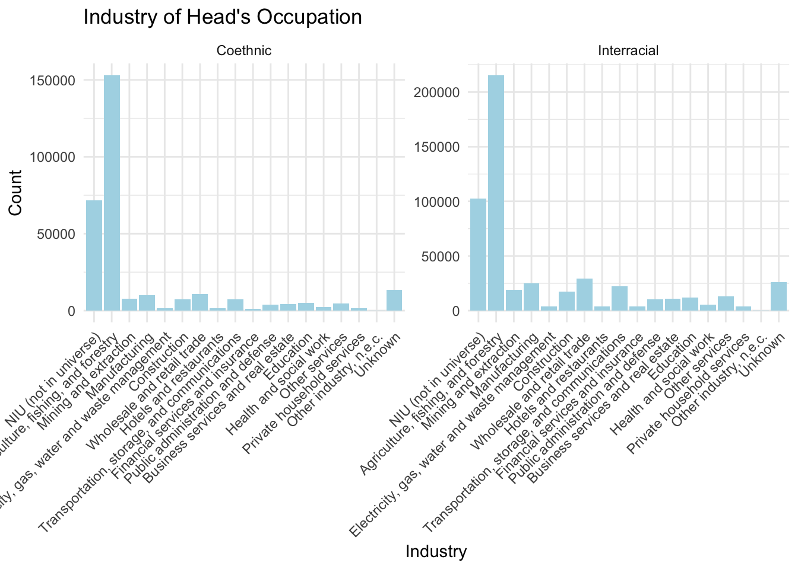
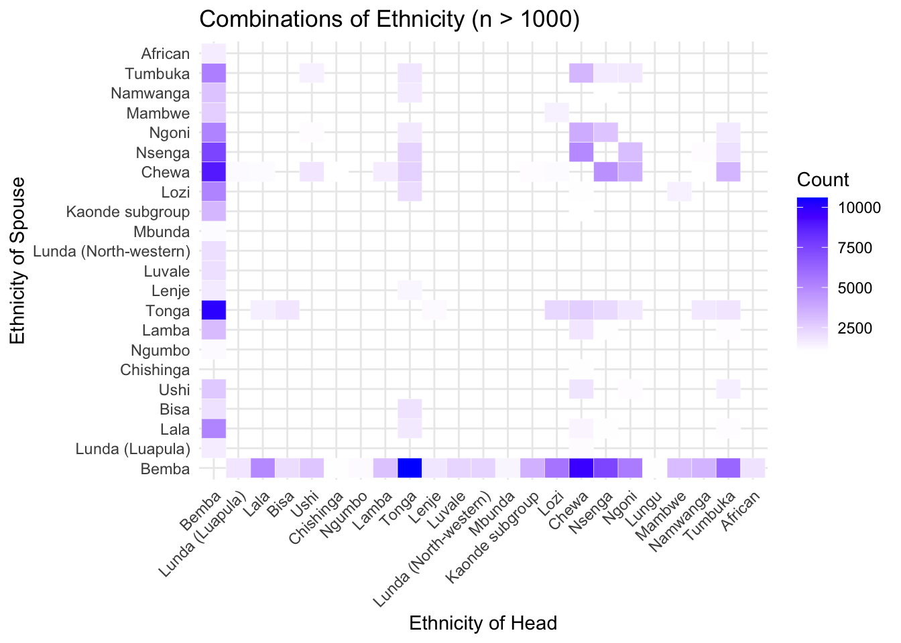
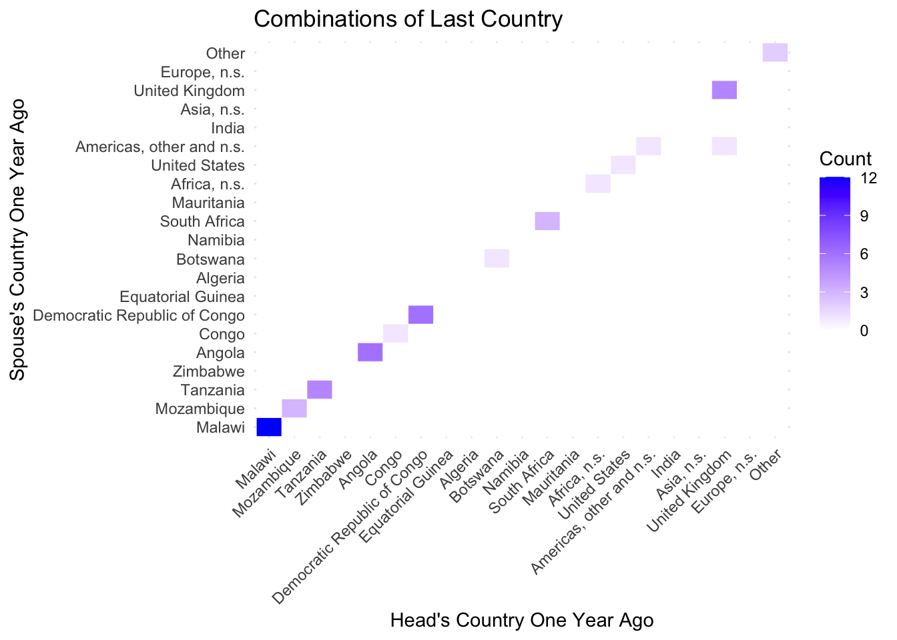
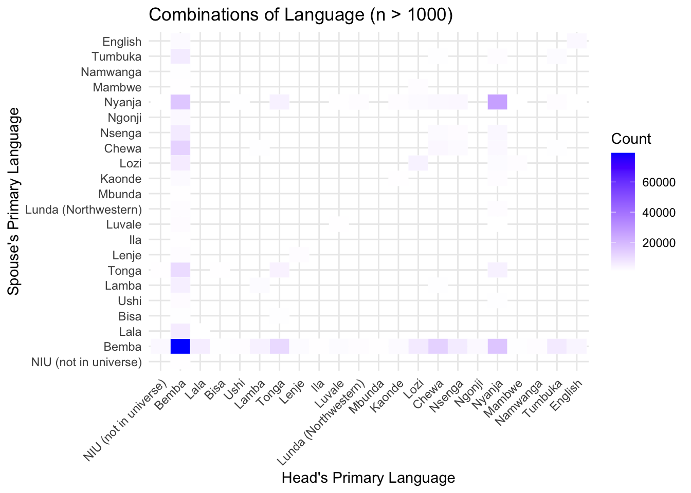
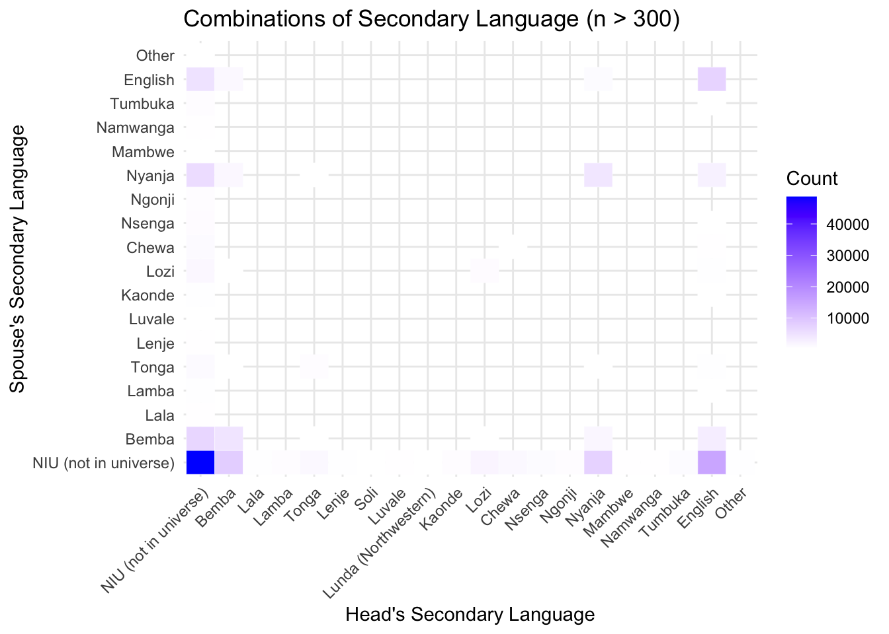

suppressPackageStartupMessages(library(tidyverse))
suppressPackageStartupMessages(library(reshape2))
suppressPackageStartupMessages(library(foreign))
suppressPackageStartupMessages(library(ipumsr))
suppressPackageStartupMessages(library(vcd))
suppressPackageStartupMessages(library(ggalluvial))
suppressPackageStartupMessages(library(ggstats))
options(scipen = 999)Zambia Census Helper Script
ddi <- read_ipums_ddi("ipumsi_00001.xml")
data <- read_ipums_micro(ddi)Use of data from IPUMS International is subject to conditions including that users should cite the data appropriately. Use command `ipums_conditions()` for more details.names(data) [1] "COUNTRY" "YEAR" "SAMPLE" "SERIAL"
[5] "PERSONS" "HHWT" "SUBSAMP" "STRATA"
[9] "URBAN" "REGIONW" "GEOLEV1" "GEOLEV2"
[13] "POPDENSGEO1" "POPDENSGEO2" "AREAMOLLWGEO1" "AREAMOLLWGEO2"
[17] "HHTYPE" "NFAMS" "NCOUPLES" "NMOTHERS"
[21] "NFATHERS" "HEADLOC" "PERNUM" "PERWT"
[25] "RESIDENT" "MOMLOC" "POPLOC" "SPLOC"
[29] "PARRULE" "SPRULE" "STEPMOM" "STEPPOP"
[33] "POLYMAL" "POLY2ND" "FAMUNIT" "FAMSIZE"
[37] "NCHILD" "NCHLT5" "ELDCH" "YNGCH"
[41] "RELATE" "RELATED" "AGE" "AGE2"
[45] "SEX" "MARST" "MARSTD" "CONSENS"
[49] "AGEMARR" "RELIGION" "RELIGIOND" "ETHNICZM"
[53] "SPEAKENG" "LANGZM1" "LANGZM2" "EMPSTAT"
[57] "EMPSTATD" "LABFORCE" "OCCISCO" "OCC"
[61] "ISCO88A" "ISCO68A" "INDGEN" "IND"
[65] "CLASSWK" "CLASSWKD" "MIGRATE1" "MIGCTRY1"
[69] "GEOMIG1_1" "MIGYRS1" relevel
new_data <- data
variables <- c("COUNTRY", "SAMPLE", "SUBSAMP", "URBAN", "REGIONW","HHTYPE", "NFAMS", "NCOUPLES", "NMOTHERS", "NFATHERS", "RESIDENT", "PARRULE", "SPRULE", "STEPMOM", "STEPPOP", "POLYMAL", "POLY2ND", "FAMSIZE", "NCHILD", "NCHLT5", "ELDCH", "YNGCH", "RELATE", "RELATED", "AGE", "AGE2", "SEX", "MARST", "MARSTD", "CONSENS", "AGEMARR", "RELIGION", "RELIGIOND", "ETHNICZM", "SPEAKENG", "LANGZM1", "LANGZM2", "EMPSTAT", "EMPSTATD", "LABFORCE", "OCCISCO", "ISCO88A", "ISCO68A", "INDGEN", "CLASSWK", "CLASSWKD", "MIGRATE1", "MIGCTRY1", "GEOMIG1_1", "MIGYRS1")
for (var in variables) {
list <- c()
for (i in seq(attr(new_data[[var]], "labels"))) {
name <- names(attr(new_data[[var]], "labels")[i])
key <- as.numeric(attr(new_data[[var]], "labels")[i])
#cat(name, ", ", key, "\n")
list[["names"]][i] <- name
list[["keys"]][i] <- key
}
new_data[[var]] <- as.factor(new_data[[var]])
levels(new_data[[var]]) <- list$names[
match(
levels(new_data[[var]]),
list$keys
)
]
cat("FINISHED", var, "\n")
}FINISHED COUNTRY
FINISHED SAMPLE
FINISHED SUBSAMP
FINISHED URBAN
FINISHED REGIONW
FINISHED HHTYPE
FINISHED NFAMS
FINISHED NCOUPLES
FINISHED NMOTHERS
FINISHED NFATHERS
FINISHED RESIDENT
FINISHED PARRULE
FINISHED SPRULE
FINISHED STEPMOM
FINISHED STEPPOP
FINISHED POLYMAL
FINISHED POLY2ND
FINISHED FAMSIZE
FINISHED NCHILD
FINISHED NCHLT5
FINISHED ELDCH
FINISHED YNGCH
FINISHED RELATE
FINISHED RELATED
FINISHED AGE
FINISHED AGE2
FINISHED SEX
FINISHED MARST
FINISHED MARSTD
FINISHED CONSENS
FINISHED AGEMARR
FINISHED RELIGION
FINISHED RELIGIOND
FINISHED ETHNICZM
FINISHED SPEAKENG
FINISHED LANGZM1
FINISHED LANGZM2
FINISHED EMPSTAT
FINISHED EMPSTATD
FINISHED LABFORCE
FINISHED OCCISCO
FINISHED ISCO88A
FINISHED ISCO68A
FINISHED INDGEN
FINISHED CLASSWK
FINISHED CLASSWKD
FINISHED MIGRATE1
FINISHED MIGCTRY1
FINISHED GEOMIG1_1
FINISHED MIGYRS1 #sum(is.na(new_data$RELIGION))
#view(new_data[1:1000,])get interracial couples
heads <- new_data %>%
filter(PERNUM == HEADLOC) %>%
select(PERNUM, SPLOC, SERIAL, HEADLOC,
AGE, RELIGION, ETHNICZM, MIGCTRY1, INDGEN, SEX, RELATE, SPRULE, LANGZM1, LANGZM2)
heads_and_spouses <- heads %>%
mutate(PERNUM_backup = PERNUM, SPLOC_backup = SPLOC) %>%
left_join(new_data %>% mutate(PERNUM_backup = PERNUM, SPLOC_backup = SPLOC) %>%
select(PERNUM, PERNUM_backup, SPLOC, SPLOC_backup, SERIAL,
AGE, RELIGION, ETHNICZM, MIGCTRY1, INDGEN, SEX, RELATE, SPRULE, LANGZM1,
LANGZM2),
by = c("SERIAL", "SPLOC_backup" = "PERNUM_backup"),
suffix = c("_head", "_spouse")) %>%
select(-all_of(ends_with("_backup")))Warning in left_join(., new_data %>% mutate(PERNUM_backup = PERNUM, SPLOC_backup = SPLOC) %>% : Detected an unexpected many-to-many relationship between `x` and `y`.
ℹ Row 1 of `x` matches multiple rows in `y`.
ℹ Row 13 of `y` matches multiple rows in `x`.
ℹ If a many-to-many relationship is expected, set `relationship =
"many-to-many"` to silence this warning.heads_and_spouses <- heads_and_spouses %>%
filter(SPLOC_head == PERNUM_spouse, SPLOC_spouse == PERNUM_head) %>%
mutate(INTERRACIAL = ifelse(ETHNICZM_head != ETHNICZM_spouse, "Interracial", "Coethnic")) %>%
filter(INTERRACIAL %in% c("Interracial", "Coethnic"))basic visualizations
interracial <- heads_and_spouses %>% filter(INTERRACIAL == "Interracial")
ggplot(heads_and_spouses) +
geom_bar(aes(x = INDGEN_head, by = INDGEN_head), fill = "lightblue", stat ="prop") +
theme_minimal() +
theme(axis.text.x = element_text(angle = 45, hjust = 1)) +
facet_wrap(~ INTERRACIAL, scales = "free") +
labs(x = "Industry", y = "Count", title = "Industry of Head's Occupation")
ggplot(heads_and_spouses) +
geom_bar(aes(x = INDGEN_spouse), fill = "pink") +
theme_minimal() +
theme(axis.text.x = element_text(angle = 45, hjust = 1)) +
facet_wrap(~ INTERRACIAL, scales = "free") +
labs(x = "Industry", y = "Count", title = "Industry of Spouse's Occupation")
combo_counts <- as.data.frame(table(interracial$ETHNICZM_head, interracial$ETHNICZM_spouse))
colnames(combo_counts) <- c("ethnicity_head", "ethnicity_spouse", "count")
ggplot(combo_counts %>% filter(count > 1000), aes(x = ethnicity_head, y = ethnicity_spouse)) +
geom_tile(aes(fill = count), color = "white") +
scale_fill_gradient(low = "white", high = "blue") +
theme_minimal() +
labs(title = "Combinations of Ethnicity (n > 1000)",
x = "Ethnicity of Head",
y = "Ethnicity of Spouse",
fill = "Count") +
theme(axis.text.x = element_text(angle = 45, hjust = 1))
combo_counts <- as.data.frame(table(interracial$MIGCTRY1_head, interracial$MIGCTRY1_spouse))
colnames(combo_counts) <- c("mig_head", "mig_spouse", "count")
ggplot(combo_counts %>% filter(!(mig_head %in%
c("Unknown","Non-migrant (international)",
"NIU (not in universe)")),
!(mig_spouse %in%
c("Unknown","Non-migrant (international)",
"NIU (not in universe)"))),
aes(x = mig_head, y = mig_spouse)) +
geom_tile(aes(fill = count), color = "white") +
scale_fill_gradient(low = "white", high = "blue") +
theme_minimal() +
labs(title = "Combinations of Last Country",
x = "Head's Country One Year Ago",
y = "Spouse's Country One Year Ago",
fill = "Count") +
theme(axis.text.x = element_text(angle = 45, hjust = 1))
combo_counts <- as.data.frame(table(interracial$LANGZM1_head, interracial$LANGZM1_spouse))
colnames(combo_counts) <- c("lang_head", "lang_spouse", "count")
ggplot(combo_counts %>% filter(count > 1000), aes(x = lang_head, y = lang_spouse)) +
geom_tile(aes(fill = count), color = "white") +
scale_fill_gradient(low = "white", high = "blue") +
theme_minimal() +
labs(title = "Combinations of Language (n > 1000)",
x = "Head's Primary Language",
y = "Spouse's Primary Language",
fill = "Count") +
theme(axis.text.x = element_text(angle = 45, hjust = 1))
combo_counts <- as.data.frame(table(interracial$LANGZM2_head, interracial$LANGZM2_spouse))
colnames(combo_counts) <- c("lang_head", "lang_spouse", "count")
ggplot(combo_counts %>% filter(count > 300), aes(x = lang_head, y = lang_spouse)) +
geom_tile(aes(fill = count), color = "white") +
scale_fill_gradient(low = "white", high = "blue") +
theme_minimal() +
labs(title = "Combinations of Secondary Language (n > 300)",
x = "Head's Secondary Language",
y = "Spouse's Secondary Language",
fill = "Count") +
theme(axis.text.x = element_text(angle = 45, hjust = 1))